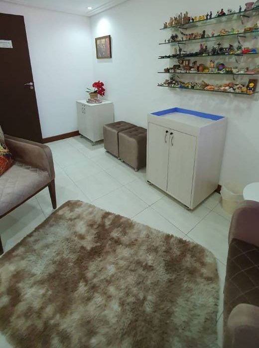
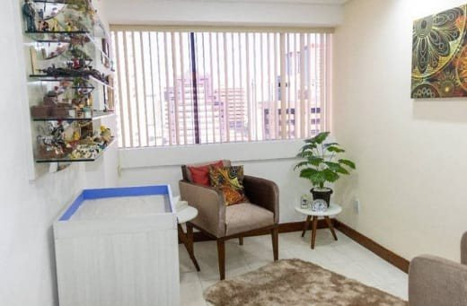
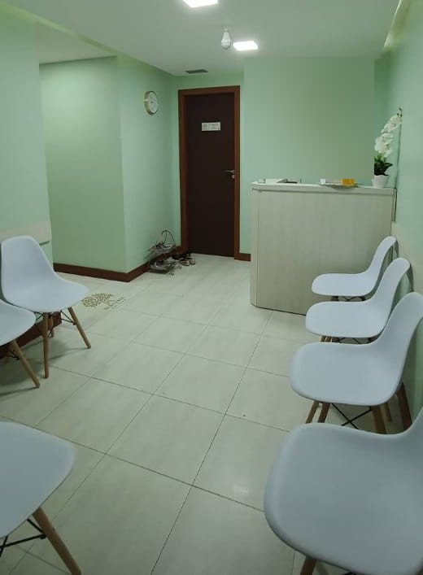

Psicóloga · CRP-03/20545
Hildete Souza
Psicoterapia para crianças e adolescentes, com recursos lúdicos e uma escuta empática.
Um espaço para a criança reconhecer, expressar e lidar com o que sente — e orientação para os pais e cuidadores que caminham com ela. Consultório no Caminho das Árvores, em Salvador, e atendimento online.
5,0★★★★★no Google · 32 avaliaçõesPor onde começar
O que trouxe você até aqui?
Cada caminho tem uma página para ler com calma antes de marcar. A informação é geral; cada processo é individual e se constrói nas sessões.
Busco terapia para o meu filho
Como a psicoterapia infantil usa o brincar e a escuta.
Psicoterapia infantil AdolescenteSou adolescente, ou tenho um em casa
Um espaço próprio para falar, com sigilo e respeito.
Adolescentes FamíliaQuero orientação como pai, mãe ou cuidador
Os encontros com a família e o papel de cada um.
Orientação a pais Primeiro passoQuero entender como começa
Agendamento, primeiro encontro e o que conversar antes.
Primeira conversaA sala lúdica
Miniaturas, areia e tempo para dizer o que se sente.
“Utilizo recursos lúdicos e uma escuta empática para favorecer o desenvolvimento emocional e o fortalecimento da autoestima.”
Hildete Souza, no perfil do LinkedIn · ver a fonte
Na sala da Hildete há uma estante de miniaturas e uma caixa de areia. Para muitas crianças, montar uma cena, escolher um boneco ou desenhar é um jeito de contar o que ainda não cabe em palavras. A psicóloga acompanha esse brincar com atenção, sem pressa e sem interpretações apressadas.
Psicoterapia infantil
Pais, escola e criança
“O cuidado emocional se constrói em rede.”
Hildete Souza, no perfil do LinkedIn · ver a fonte
A criança está no centro, mas não sozinha. A Hildete também oferece orientação a pais e cuidadores: encontros para entender o momento da criança, pensar a rotina de casa e combinar como acompanhar o processo. Quando faz sentido, e com a autorização da família, a conversa pode incluir a escola.
- Pais e cuidadores recebem orientação e devolutivas sobre o processo.
- A escola entra quando ajuda a criança, sempre combinado com a família.
- O que a criança conta é protegido pelo sigilo profissional.
Trajetória
Da psicologia infantil ao consultório próprio.
- Nov/2019Psicóloga infantil em consultório particular
Início declarado por ela no perfil do LinkedIn.
Fonte: LinkedIn - CRP-03Registro ativo: CRP-03/20545
Inscrição ativa no Conselho Regional de Psicologia da Bahia (3ª Região).
Fonte: Cadastro do CFP - Jun/2023Empresa própria
Hildete Ferreira de Souza Ltda, aberta em 23/06/2023, com a Hildete como sócia-administradora.
Fonte: Receita Federal - HojeCaminho das Árvores e online
Crianças e adolescentes, presencial na sala 1210 do Bahia Executive Center e por vídeo.
Fonte: Perfil no Google
Nas palavras dela
“Reconhecer, expressar e lidar com seus sentimentos.”
“Atuo como psicóloga infantil, acompanhando crianças em seus processos emocionais, ajudando-as a reconhecer, expressar e lidar com seus sentimentos de forma saudável.”
Hildete Souza, no perfil do LinkedIn · ver a fonte
Textos da Hildete
O que ela escreve sobre o próprio trabalho.
Frases publicadas por ela no perfil do Google e no LinkedIn, com o link para a fonte.
Psicoterapeuta Infantil, Atendimento Criança e Adolescente Presencial e Online.Ver a fonte
Atuo como psicóloga infantil, acompanhando crianças em seus processos emocionais, ajudando-as a reconhecer, expressar e lidar com seus sentimentos de forma saudável.Ver a fonte
Utilizo recursos lúdicos e uma escuta empática para favorecer o desenvolvimento emocional e o fortalecimento da autoestima.Ver a fonte
Também ofereço orientação a pais e cuidadores, acreditando que o cuidado emocional se constrói em rede, com afeto, presença e compreensão.Ver a fonte
Acredito que cada pessoa carrega uma história que merece ser escutada com respeito e cuidado.Ver a fonte
Psicoterapia é encontro, processo e transformação.Ver a fonte
Para ler com calma
Dúvidas de quem está pensando em terapia.
Seis leituras curtas, com informação geral e prudente. Cada situação é conversada com a Hildete.
Na infância, o brincar é uma forma de dizer o que ainda não cabe em palavras.
Ler →Primeira conversaComo contar para a criança que ela vai à psicólogaPalavras simples, sem tom de castigo e sem prometer o que não depende de ninguém.
Ler →AdolescentesO que fica entre o adolescente e a psicólogaComo o sigilo funciona e o que os responsáveis acompanham.
Ler →Pais e cuidadoresPara que servem os encontros com os paisDevolutivas, combinados e o lugar da família no processo.
Ler →OnlineComo preparar o espaço para a sessão por vídeoUm canto reservado, fone, conexão estável e privacidade.
Ler →O consultórioA sala com estante de miniaturas e caixa de areiaFotos do espaço no Caminho das Árvores, publicadas por ela.
Ler →Consultório
Sala 1210, Caminho das Árvores.
No Edf. Bahia Executive Center, em Salvador. O perfil do Google informa entrada e estacionamento com acessibilidade para cadeira de rodas. Veja o consultório.


Hildete Souza · PsicólogaEdf. Bahia Executive Center · Rua Cel. Almeida Rehem, 82, sala 1210 · Caminho das Árvores, Salvador – BA · 41820-768
Atendimento com hora marcada
Horário do perfil da Hildete no Google. É recomendado marcar hora — confirme pelo WhatsApp.
Dúvidas frequentes
Perguntas comuns de pais e cuidadores
Como funciona a primeira sessão?
Com crianças, o primeiro encontro costuma ser com os pais ou responsáveis, para conhecer a história e o que motivou a busca. Depois a criança vem conhecer a sala e a psicóloga, no ritmo dela. Os detalhes são combinados com a Hildete no agendamento. Veja a primeira conversa.
Quanto tempo dura cada sessão?
A duração e a frequência das sessões são combinadas no agendamento e no início do processo, conforme a idade e a necessidade.
A Hildete atende online?
Sim. A descrição do perfil dela no Google diz “Atendimento Criança e Adolescente Presencial e Online”. Veja como funciona o online.
O que a criança conta na sessão é contado aos pais?
O conteúdo das sessões é protegido pelo sigilo profissional. Os pais recebem orientações e devolutivas sobre o processo, sem a exposição de tudo o que a criança disse; o que é compartilhado é o necessário para o cuidado dela.
Em quanto tempo vamos ver mudanças?
Não há prazo nem promessa: cada processo é individual e se constrói nas sessões, no tempo da criança ou do adolescente.
Como funcionam valores e pagamento?
Essas informações são passadas pelo WhatsApp (71) 98855-8897.
Agende
Comece por uma primeira conversa.
Presencial no Edf. Bahia Executive Center, no Caminho das Árvores, ou online. O agendamento é pelo WhatsApp (71) 98855-8897.